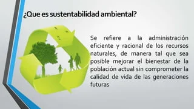
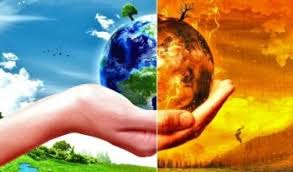

Conceptos clave para entender qué es la sostenibilidad.
La sostenibilidad ambiental implica reducir el impacto negativo de las actividades humanas sobre el medio ambiente y maximizar los beneficios positivos. Se basa en la comprensión de los límites naturales del planeta y la necesidad de preservar la biodiversidad y los ecosistemas.
Calentamiento Global.
Esta es la palabra que está en el origen de las actuales estrategias de sostenibilidad. Este término, que se utilizó por primera vez en un artículo de la revista Science de 1975, para definir el fenómeno por el cual las temperaturas medias de la Tierra habrían aumentado debido a la actividad humana a partir de la Revolución Industrial debido al incremento de los gases de efecto invernadero de la atmósfera, que retienen parte de la energía proveniente del sol, y liberan otra parte al espacio exterior. Aunque este mecanismo es natural y ha permitido la vida en la Tierra tal y como la conocemos (si no existiera las temperaturas medias del planeta serían mucho más bajas), los gases emitidos por la actividad humana han provocado una mayor retención del calor y el desequilibrio climático.
Neutralidad Climatica.
Según el Parlamento Europeo, la neutralidad climática o neutralidad de carbono se consigue cuando “se emite la misma cantidad de dióxido de carbono (CO2) a la atmósfera de la que se retira por distintas vías, lo que deja un balance cero, también denominado huella cero de carbono”. La meta es lograr frenar el aumento de las temperaturas globales por los gases de efecto invernadero. En el Acuerdo de París del año 2015 se menciona la imperativa necesidad de alcanzar la neutralidad climática en este siglo. La eficiencia energética, las energías renovables, un transporte y una movilidad más limpios o una mayor penetración de la economía circular son algunos de los pasos a seguir para alcanzar la neutralidad climática, además de las tecnologías de captura y almacenamiento de carbono o un papel energético más relevante de la biomasa.
Biodiversidad
Según el Convenio Internacional sobre la Diversidad Biológica, la biodiversidad comprende la variedad de seres vivos que habitan la Tierra y los patrones naturales con los que se relacionan tras millones de años de evolución natural y también como consecuencia de la influencia de las actividad humana. La biodiversidad también incluye los distintos ecosistemas de la Tierra (océanos, desiertos, tundra, bosques…) y todas las variedades genéticas de cada especie que habita en nuestro planeta, incluidos también los microbios. Para clasificar la innumerable variedad de organismos vivos de la Tierra se utilizan los biomas o ecosistemas de gran extensión, que son zonas definidas en términos ecológicos en las que se dan condiciones climáticas y comunidades de plantas, animales y organismos similares. El cambio climático es uno de los factores principales que fomenta la pérdida de la biodiversidad en el mundo, junto con la pérdida de hábitats, la sobreexplotación, la contaminación y las especies exóticas invasoras.
Contáctanos